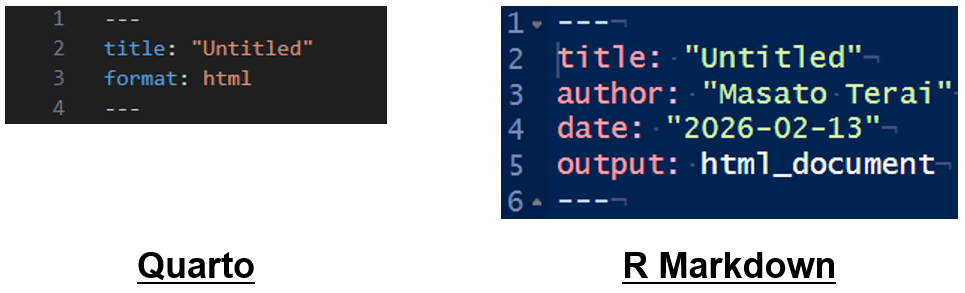

Positron入門!
Rユーザーのための次世代IDE
2026-02-24 15:53:03
はじめに
自己紹介
寺井雅人（Masato Terai）
- 熊本出身、名古屋在住
大学教員（助教）
- 外国語習得や言語理解に関する研究
北海道は31年の人生で初
私とR、Rコミュニティ
Rユーザー歴8年
- 半年前、RStudioからPositronへ完全移行
Rコミュニティ
初参加：Nagoya.R (2018)
初発表：Japan.R (2024)
想定している聴衆の方
Rをメインで使うもしくはR時々Pythonの方
パッケージ開発というより、データ分析などを主な用途としている方
Visual Studio Codeより、RStudioに慣れ親しんでいる方
今回の内容
Positronについて
Quartoについて
1. Positronについて
Positronとは
RとPythonを”First-class”言語とするVisual Studio Codeに似ている統合開発環境
- Posit社（RStudioを開発した）が開発中の次世代統合開発環境
もう beta 版ではない
Stable releases of Positron are now available!
Thank you to all our beta users who have been testing and giving feedback on our prereleases over the last year.
こんな人にお勧めかも（by 公式）
VS Codeに比べ、もう少しデータ分析専用の便利機能がほしい人
JupyterLabなどを使い続けたいが、もっと高機能で本格的な IDE を使いたい人
RStudio を使っていて、IDE をもっと自分好みにカスタマイズしたり、機能を拡張したりしたい人
Python や R だけでなく、Rust、C++、JavaScript、Lua などの言語も使って日常的にデータ分析やパッケージ開発をしている人
データ分析に特化した強力な AI 機能を、モダンで拡張性の高い IDE の中で使いたい人
カスタマイズと機能拡張とは：
拡張機能
- VS Codeのほとんどの拡張機能を使える
AIアシスト
様々なLLMを選べる
Databotによるノーコード開発
RStudioとの主な違い
Rprojがない！
フォルダ = プロジェクト
詳しい解説：The Rproj File
RMarkdown、Quartoの書き出しが可能だが、いわゆる “Knit”ボタンがない
qmdファイルの場合、“Preview”や”Render on Save”で書きだす
Rmdファイルの場合、“Preview”に、“Render Document With R Markdown”が表示される
RStudioとの主な違い
現時点では、RStudioとは異なり、実行結果は、コンソールペインでしか確認できない
However, we are actively enhancing our Positron-native notebook UI that will provide inline outputs for Python or R sessions.
Rがクラッシュしても、Positron自体は生き残ることが多い
RやPythonのバージョンの切り替えも、コンソールの再起動だけでよい
AI-Powered Data Science
PositronはRStudioに比べより多くのAIサポートを受けられる
- Databot機能など、ノーコードでの分析が可能に
Note
AIサポートはPositronの推しポイントですが、個人的に使用してませんし、既に解説記事が複数あるので割愛しました。詳しくは以下のYoutubeや参考文献を参考にしてください。
つまり
RStudioの機能をそのままに新たな機能を拡張したわけではない
- RStudioにしかない機能もある
RStudio: Rに特化した完成度の高い開発環境
- RだけならRStudio
Positron：多言語の将来性のある開発環境
- 多言語ならPositron
実際に触ってみましょう
Positronのインストール
Rのインストールも忘れずに！
- R バージョン 4.2以上が必要
それぞれのOSに合うインストーラーを選ぶ
レイアウト

Pic From https://positron.posit.co/
それぞれの機能
Activity Bar：ファイル、Git、拡張機能、AIアシストなどを表示
Primary Side Bar：Activity Barの詳細。Activity Barで選んだものによって内容が異なる。
Editor：コードを記述する箇所
Panel：コンソール、ターミナルなどが表示される
Secondary Side Bar：変数や、プロットなどが表示される
RStudioとの比較

レイアウトの指定
Stacked Layout：デフォルト
Side-By-Side Layout：RStudioにより近い
Notebook Layout：Side-By-Side LayoutマイナスVARIABLESペイン
- ソースコードの下にコンソールが配置される
Assistant Layout：Stacked Layoutとあまり違いが分からない。Primary Side Barが少し広い。
コマンドパレット
VS Codeからの機能
- キーボードから手を離さずに作業できる
ショートカット（コマンドモード）
大体のキーワードで検索してくれる（= 部分一致）
- Windows: [Ctrl] + [Shift] + [P]
- Mac: [command] + [shift] + [P]
コマンドパレット
[?]を入れると様々なコマンドを一覧可能
おすすめ
キーワード検索
- コマンドパレットで[%]
ファイルを開く
- Windows: [Ctrl] + [P]
- Mac: [command] + [P]
開いているファイルの特定の行にジャンプ
- Windows: [Ctrl] + [G]
- Mac: [command] + [G]
アピールポイント
データの確認機能
データの分布や、欠損値の割合などを確認できる
以下のコードをRunして、VARIABLESで確認
フィルター機能
RStudioに比べ、より詳細な設定が可能


作成した図を確認可能
セッション内で作成した図が表示されており、探しやすい
- 以下のコードをRunして、PLOTSで確認
ちなみに、、、
- SESSIONタブで表示されている、VARIABLES、PLOTS、CONSOLEはドラッグ&ドロップで表示の順番を変更できます。
Git操作
サイドバーの上から3つ目がGit操作
- RStudioでは、EnvironmentとGitを同時に開けないので、サイドバーに表示されているのはありがたい
RStudioに比べ、クリック操作で行えるコマンドがかなり増えた（VS Codeレベルになった）
- RStudio：Commit、Push、Pull
GitHub
連携のしやすさ：大きな差はない
差分の確認はRStudioの方がやや見やすい
プレビュー機能
Previewを見ながらqmdやRmdファイルを編集できる
- RStudioでは、Knit（Render）というステップが必要

ミニマップ機能
スクロールバーの上で右クリック → [Minimap]をクリック
- RStudioのOutline機能はないので、その代用として使用
左：RStudio、右：Positron
テーマ・フォントの変更
テーマの変更：左下の⚙をクリック → [Themes] → [Color Theme]
- RStudioよりも選択肢が少ない
フォントの大きさの変更：左下の⚙をクリック → [Settings] → [Text Editor] → [Font Size]
おすすめ拡張機能
必要なものは基本的にインストール済
「VS Code おすすめ拡張機能」で検索がおすすめ
- 大体の拡張機能はPositronにインストール可能
vscode-pdf
Positron内でPDFを確認できる
- Split Editorで並列させると便利
Rainbow CSV
- CSVファイルの中身を色分けして可読性を上げる

Pic From Rainbow CSV
indent-rainbow
インデントを階層ごとに異なる色でハイライト
- 背景が黒だと見えずらいので注意

Pic From indent-rainbow
2.Quartoについて
概要
Pandocを基盤にした研究・技術文書作成のための出版システム
Rに依存しない
R -> R Markdown
Python -> R Markdown = Rの追加インストール
R -> Jupyter = Pythonの追加インストール
R & Python -> Quarto
R Markdownとの違い
様々なプログラム言語に対応（e.g., R、Python、Julia）
- QuartoはRStudio外でも使いやすい
Quartoは単体のツール
R Markdownでは、distill -> website、bookdown -> 本, revealjs -> スライド
Quartoは以上を一つにまとめている
- 長期的にパッケージ管理がしやすい
R Markdownとの違い
PositronとQuarto、RStudioとR Markdown
R MarkdownはRStudio内で完結するのが快適（Pythonが使えないわけではない）
QuartoはVSコードやJupyter、PositronでもOK!
R Markdownの今後
RStudioと同様、今後も生き残るらしいのでご安心を
- R Markdownに満足しているのであれば、Quartoに変える必要もない
R Markdown is not going away! R Markdown is used extensively and continues to work well. It will continue to be actively supported.
PositronでQuartoを触ってみましょう
Quartoファイルの作成
左上のNewをクリック -> ［New File…］ -> ［Quarto Document］をクリック
キーボードから手を放したくないのであれば、
- [Ctrl] + [P] を押す -> [>]を入力 -> [Create New File…] -> ［New File…］ -> ［Quarto Document］
R Markdownファイルも開きましょう
残念ながら.Rmdファイルのテンプレート選択画面はない
- RStudioで作成した.Rmdファイルを開きます
R Markdownとの記法の違い
YAML：出力形式の指定
- Quarto:
format
- R Markdown:
output

YAML
R Markdownに合わせる
authorとdateも追加date: nowでもよい
コードチャンク
その他
Important
Quartoでは、R Markdownよりも記法が少し厳しい印象です。
例えば、echo = Fと書いたり、“:” の後に半角スペースを入れないと怒られます。
網羅的な記法は公式の資料を参照してください
HTMLファイルに書き出す
Quarto：［Preview］もしくは［口 Render on Save］に✔を入れてから保存
TERMINALでも可能
quarto preview ファイル名.qmdquarto render ファイル名.qmd
R Markdown：上記の方法もしくは［Preview］で［Render Document With R Markdown］を選択
エラーが出たら
Caution
TERMINALでRenderすることも可能ですが、YAMLでengineを定義していない場合、エラーになる場合があります。
例えば、Python3がないと、TERMINAL操作ではRenderできません。おそらくデフォルトでJupyter設定になっています。
Starting python3 kernel…Python Unable to locate an installed version of Python 3. Install Python 3 from https://www.python.org/downloads/
従って、RユーザーはYAMLで以下のようにKnitrを明示しておくといいかもしれません。 engine: knitr
ちなみに
このスライドもQuartoで作成しています。
Githubの “index.qmd”を見ると、YAMLの設定など細かい点を確認できます。
- YAMLで出来ない設定は.scssファイルで設定しています。
GitHubへのリンク：https://github.com/masato-terai/Workshop_SappoRoR
まとめ
RStudioから乗り換えるべき？？
個人的にはお勧めだが、必須ではない
RStudioが消えるわけではない（開発が止まったりするわけではない）
- Positronよりも、RStudio（10年以上の歴史）の方がより安定したソフトウェア
R, RStudioにこれから触れる人は、Positronがお勧めらしい
- 既にRStudioをガンガン使っていて、満足しているならRStudioのままでOK!
Positronへ乗り換えた個人的理由
わさもんだから（熊本弁：新しいもの好き）
データの外観機能が気に入っている
Pythonをもっと習得したいが、言語によってIDEを変えたくないから
Positronの将来性に期待しているから
Positronを勧める理由
データ分析のための補助機能が豊富
データの分布を一覧で出せる
プロットの一覧が見れる
手をキーボードから離す頻度が減る
Git操作がより簡単に
AIのアシストをより受けられる
- Databot機能などを活用すればほぼノーコードで分析が可能
Positronを勧めない理由
RStudioに慣れた人は最初戸惑う可能性大
R言語だけならRStudioで十分
習得するためのサポートが少ない（特に日本語）
- 紙媒体の資料はまだない
参考資料
- 💻：ウェブサイト
- 📽：Youtube
英語
💻Positron
💻quarto
📽Positron IDE doing Data Analysis with R
💻Settings, Keybindings, and Extensions for Positron
💻I’m an R user: Quarto or R Markdown?
日本語
💻【AI全部載せできるRのデータ分析環境はこれ】Positron Assistantの導入ガイド
💻Positronのおすすめ設定！【R | Python】
💻Positron 最速入門
💻Positronって実際どうなの？RStudioユーザーがCursorと比較しながら触ってみた
スライドの最後です
Published: 2026-02-13, Last update: 2026-02-24 15:53:03, Time Zone: Asia/Tokyo